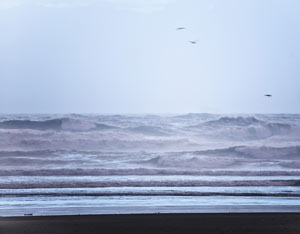

The most up-to-date report on climate science notes that global temperatures, sea levels, and frequency of extreme weather events are all increasing beyond the patterns of natural variability within which our contemporary society and economy have developed. That doesn’t bode well for the future of global economies and of civilization itself - nor on the ecosystems that our civilization depends on - unless global societies rise to meet the challenge of climate change.
The report, based on a scientific congress held in Copenhagen, Denmark, in March, is an attempt to update the 2007 synthesis report from the Intergovernmental Panel on Climate Change (IPCC), which has already become outdated. For instance, the IPCC report acknowledged a lack of understanding of the dynamic processes that cause polar ice to melt, so the report left those effects out and projected a sea level rise of up to 59 centimeters (23 inches) by 2100. New observations have nearly doubled that projection to one meter, or 39 inches - an increase that would threaten many islands, shorelines and low-lying wetlands.
The report also provides updates on our understanding of ocean surface temperatures and heat content, indicating that ocean warming is about 50 percent greater than the IPCC had reported. The new report also notes the rapid reduction in Arctic Sea ice in the summer. It also notes that a decreasing amount of carbon dioxide emissions are removed by natural “carbon sinks” on land and in the ocean, thereby amplifying the effect of future carbon dioxide emissions. Meanwhile, new studies have shown that societies and ecosystems are highly vulnerable to even modest levels of climate change, and a global temperature rise of more than 2 degrees Celsius (about 36 degrees Fahrenheit) above pre-industrial levels will cause “major societal and environmental disruptions.”
To help mitigate these disruptions, the world must limit its greenhouse gas emissions through such measures as promoting energy efficiency while shifting to low-carbon energy sources, such as renewable energy. The report also identifies the eastern half of the United States as one of two critical agriculture centers for the future of the world. Given the availability of a wide range of tools and approaches to deal with climate change, the report concludes that “inaction is inexcusable.”
|
 DAVID SIFRY/FLICKR The Copenhagen Report indicates that ocean warming is about 50 percent greater than what the Intergovernmental Panel on Climate Change reported in 2007. |
|
|